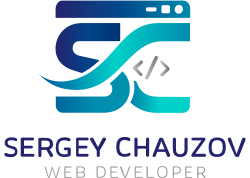

Новый проект
Запуск сайта с нуля
Лендинги, сайты услуг и корпоративные проекты с понятной структурой, сильной подачей и аккуратной технической основой.

Разработка сайтов • Доработка • Исправление ошибок
Помогаю бизнесу запускать и развивать сайты без лишней бюрократии: продумываю структуру, собираю интерфейс и логику, подключаю интеграции, ускоряю загрузку и довожу проект до стабильной работы. Вы общаетесь напрямую с исполнителем и на каждом этапе понимаете, что делается и зачем.
Стек и подход
В работе объединяю дизайн, инженерную точность и здравый взгляд на бизнес-задачу — без лишнего шума и модных слов ради слов.
Новый проект
Лендинги, сайты услуг и корпоративные проекты с понятной структурой, сильной подачей и аккуратной технической основой.
Развитие
Навожу порядок в интерфейсе, ускоряю загрузку, усиливаю SEO-структуру и помогаю сайту работать на заявки, а не просто существовать.
Срочные задачи
Восстанавливаю вёрстку, формы, скрипты, интеграции и другие нестабильные участки, чтобы сайт снова работал предсказуемо.
Здесь не абстрактная картинка, а реальный проект: задача, решение, внедрение и итоговый результат. Так проще оценить мой подход и уровень ответственности.
Aplus Charisma — сайт услуг с коммерческим фокусомПосмотреть ↗Почему это удобно для бизнеса
Вместо цепочки подрядчиков вы работаете с одним исполнителем, который собирает проект целиком: от структуры и интерфейса до интеграций, скорости и SEO-основы. Это экономит время, сокращает число переделок и делает запуск спокойнее.
Опишите задачу в двух-трёх сообщениях — в ответ вы получите понятный план работ, ориентир по срокам и следующий шаг без лишней воды.